WS05 — Failure Se Kaise Seekhein?
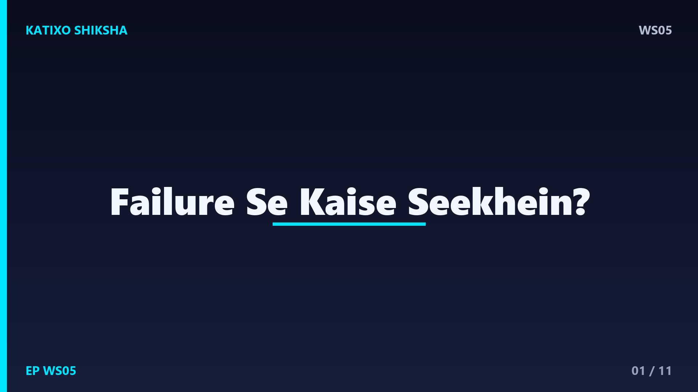
Slide 1दोस्तों, एक सच जो कोई नहीं बताता — हर successful इंसान की कहानी असल में असफलताओं की कहानी है। हम सिर्फ़ उनकी जीत देखते हैं, पर उसके पीछे छुपे हुए सैकड़ों failures नहीं देखते। हम failure से इतना डरते हैं कि कोशिश करना ही छोड़ देते हैं। मैं हूँ Katixo KhojLab, और आज की कहानी तुम्हें सिखाएगी कि failure तुम्हारा दुश्मन नहीं, तुम्हारा सबसे अच्छा teacher है। चलो शुरू करते हैं।
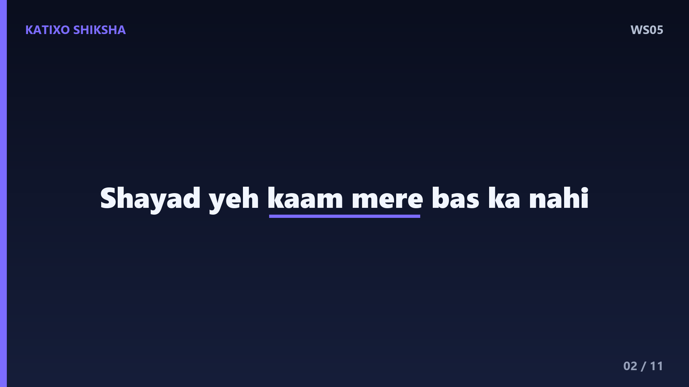
Slide 2एक गाँव में एक कुम्हार था, जो मिट्टी के बर्तन बनाता था। उसका एक शागिर्द था, बहुत जोशीला, पर बहुत जल्दी हार मान लेता था। एक दिन शागिर्द ने एक घड़ा बनाया, पर वो टूट गया। उसने दूसरा बनाया, वो भी टेढ़ा हो गया। तीसरा भट्टी में फट गया। निराश होकर वो बोला — गुरुजी, शायद ये काम मेरे बस का नहीं। मैं बार-बार fail हो रहा हूँ। कुम्हार मुस्कुराया और बोला — आ, मेरे साथ चल।
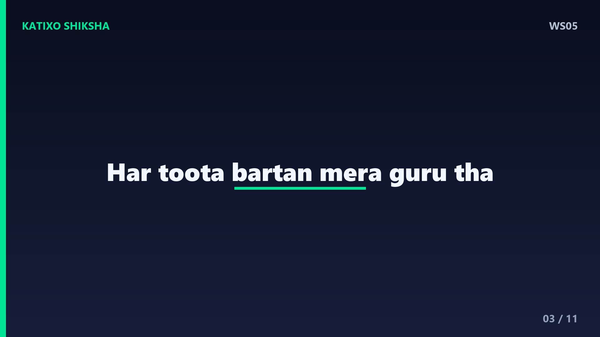
Slide 3कुम्हार उसे अपनी पुरानी झोपड़ी के पीछे ले गया, जहाँ टूटे हुए बर्तनों का एक बड़ा ढेर था। उसने कहा — बेटा, ये सब मेरे टूटे हुए बर्तन हैं, हज़ारों। हर टूटा बर्तन मुझे कुछ सिखा गया — कितनी मिट्टी सही है, भट्टी कितनी गरम होनी चाहिए, हाथ कैसे चलाने हैं। तू जिन्हें failure कहता है, वो मेरे असली गुरु थे। अगर ये टूटे ना होते, तो मैं आज अच्छे बर्तन कभी ना बना पाता।
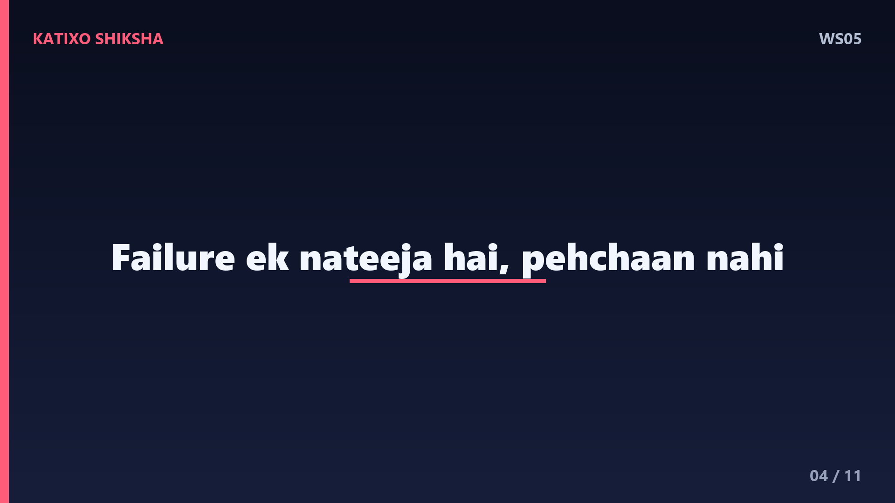
Slide 4Lesson नंबर एक — failure एक नतीजा है, तुम्हारी पहचान नहीं। बहुत बड़ा फ़र्क है इन दो बातों में — मैं fail हुआ, और मैं एक failure हूँ। पहला एक घटना है, जो हुई और गुज़र गई। दूसरा एक झूठा label है जो तुम खुद पर चिपका लेते हो। एक काम का असफल होना तुम्हें असफल इंसान नहीं बनाता। तुम वो नहीं हो जो तुम्हारे साथ हुआ — तुम वो हो जो तुम उससे सीखते हो।
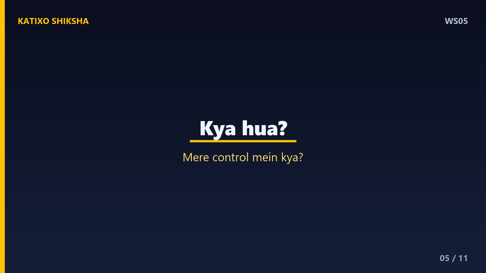
Slide 5अब एक powerful technique — हर failure के बाद तीन सवाल पूछो। पहला — क्या हुआ, असल में? दूसरा — इसमें मेरा control में क्या था, जो मैं बदल सकता था? और तीसरा — अगली बार मैं एक चीज़ क्या अलग करूँगा? जैसे ही तुम failure को एक feedback की तरह देखते हो, वो दर्द एक सबक बन जाता है। हर गलती में एक छुपा हुआ नक्शा होता है, जो तुम्हें सही रास्ता दिखाता है।
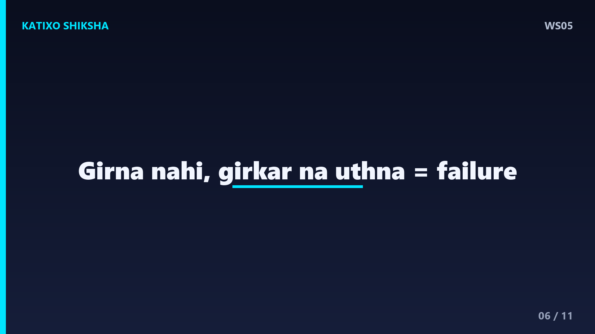
Slide 6Lesson नंबर दो — असली failure गिरना नहीं है, गिरकर ना उठना है। दोस्तों, बच्चा चलना सीखते वक़्त सैकड़ों बार गिरता है, पर वो खुद को कभी failure नहीं कहता, बस फिर उठ जाता है। हम बड़े होकर वही मासूम हिम्मत खो देते हैं। याद रखना — तुम तब तक नहीं हारते जब तक तुम कोशिश करना नहीं छोड़ते। हर बार उठना ही असली जीत है, फिर चाहे कितनी भी बार गिरना पड़े।
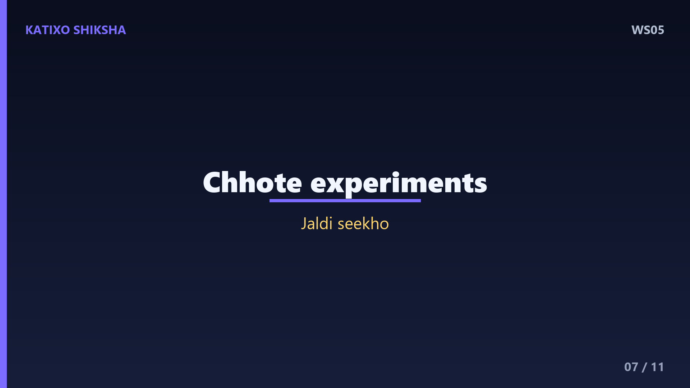
Slide 7Technique नंबर दो — अपनी हिम्मत को छोटा रखो, ताकि गिरना भी छोटा हो। बड़े-बड़े जुए मत खेलो जहाँ एक failure सब कुछ खत्म कर दे। छोटे-छोटे experiments करो। अगर एक नाकाम हुआ, तो थोड़ा नुकसान, बहुत सारी सीख। Science इसे कहती है fail fast — जल्दी, छोटे में fail हो जाओ, जल्दी सीखो, और आगे बढ़ो। जो जितने ज़्यादा छोटे experiments करता है, वो उतनी जल्दी जीतना सीख जाता है।
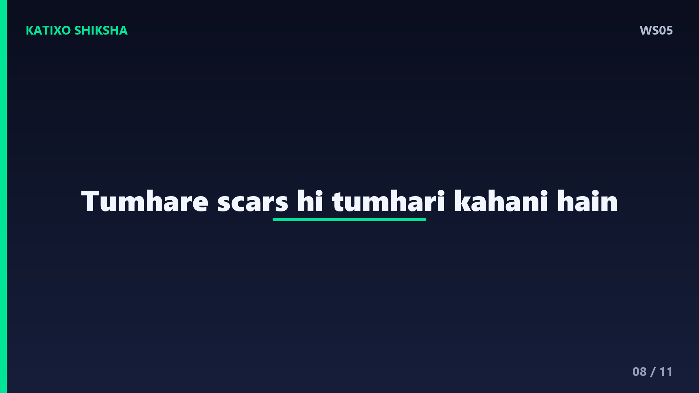
Slide 8एक गहरी बात — अपने failure को छुपाओ मत, उससे शर्मिंदा मत हो। हम सोचते हैं दुनिया हमारी गलतियों पर हँसेगी। पर सच ये है, हर इंसान fail होता है, बस छुपाता है। जब तुम अपनी असफलता को खुलकर मानते हो और उससे सीखते हो, तो तुम कमज़ोर नहीं, सबसे मज़बूत दिखते हो। और अक्सर तुम्हारी सबसे बड़ी सीख, किसी और के लिए सबसे बड़ी मदद बन जाती है। तुम्हारे scars ही तुम्हारी असली कहानी हैं।
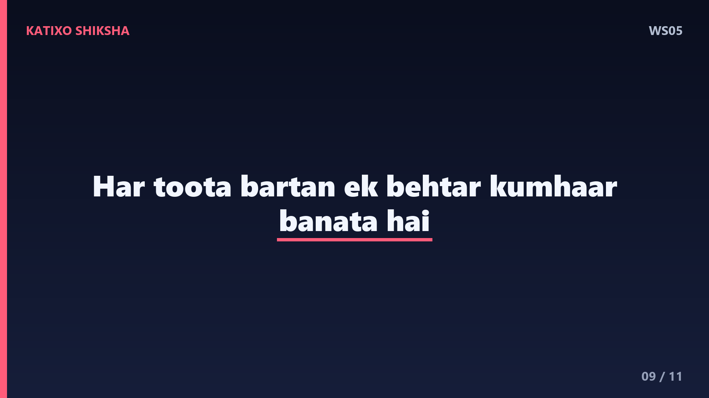
Slide 9शागिर्द ने वो टूटे बर्तनों का ढेर देखा, और उसकी आँखें खुल गईं। उसने फिर से मिट्टी उठाई, इस बार बिना डर के। उसका अगला घड़ा भी थोड़ा टेढ़ा था, पर अब वो मुस्कुरा रहा था, क्योंकि उसे पता था — हर टूटा बर्तन उसे एक बेहतर कुम्हार बना रहा है। सालों बाद, वो उसी गाँव का सबसे माहिर कुम्हार बना। और उसके पीछे भी एक ढेर था, टूटे बर्तनों का — उसके सबसे बड़े गुरुओं का।
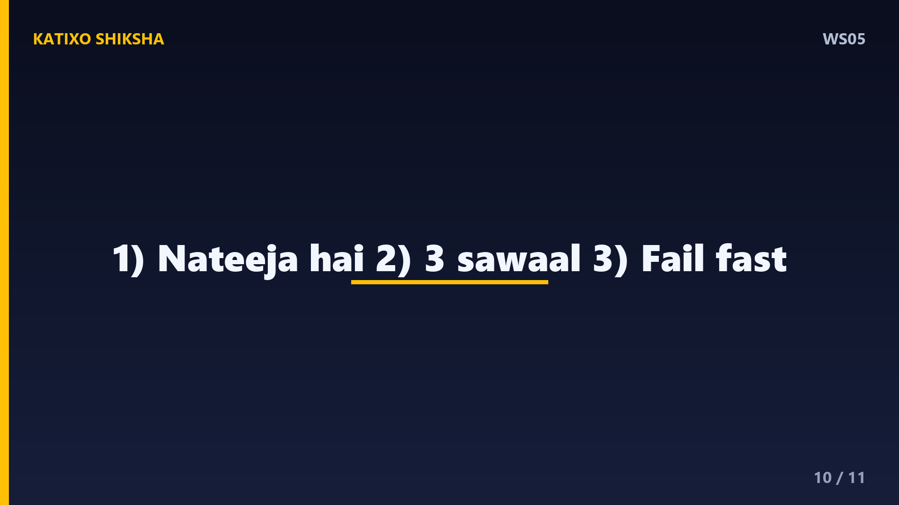
Slide 10चलो आज की तीन सबसे बड़ी सीख याद कर लें। पहली — failure एक नतीजा है, तुम्हारी पहचान नहीं; मैं fail हुआ, ये अलग है, मैं failure हूँ, ये गलत है। दूसरी — हर failure के बाद तीन सवाल पूछो और उसे feedback बना लो। और तीसरी — छोटे experiments करो, जल्दी fail हो, जल्दी सीखो। ये तीन बातें failure के डर को तुम्हारी सबसे बड़ी ताकत में बदल देंगी।
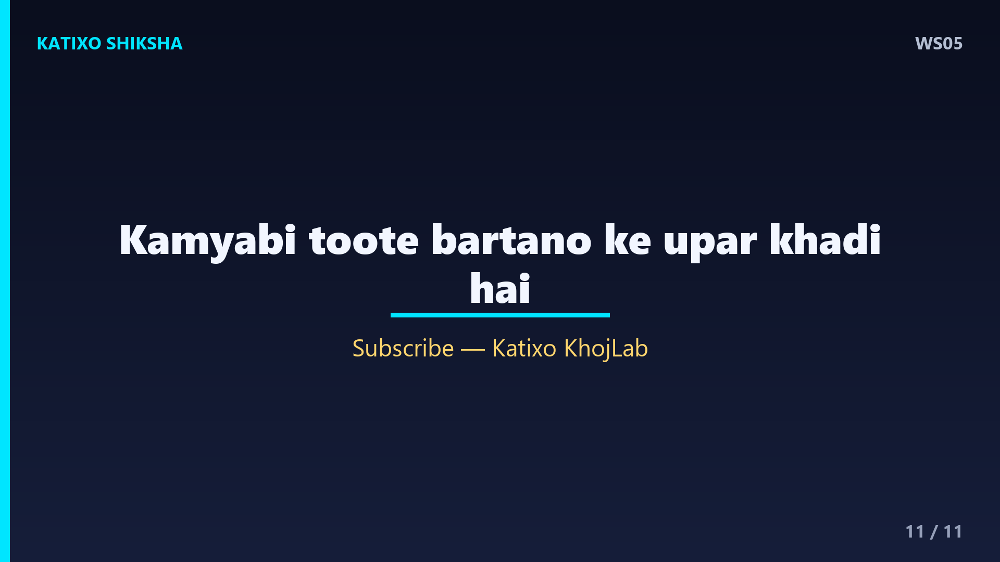
Slide 11याद रखना दोस्तों — कोई भी बड़ी कामयाबी एक सीधी लाइन में नहीं आती। वो टूटे बर्तनों के एक ढेर के ऊपर खड़ी होती है। इसलिए गिरने से मत डरो, बस हर बार उठना सीखो और सीखते रहो। तुम्हारी आज की असफलता तुम्हारे कल की कहानी का सबसे ज़रूरी हिस्सा है। अगर ये कहानी काम की लगी, तो Like, share, aur Katixo KhojLab ko subscribe karna mat bhoolna. Milte hain agli kahani mein! तब तक — गिरो, सीखो, फिर उठो।